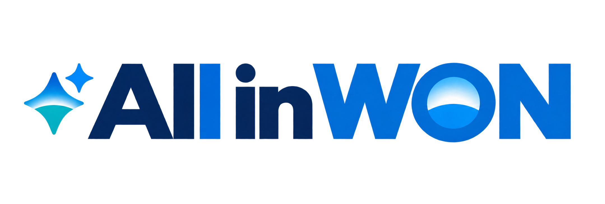
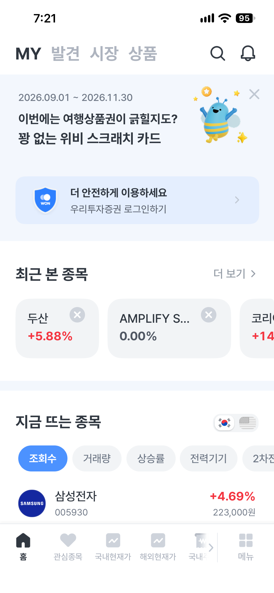
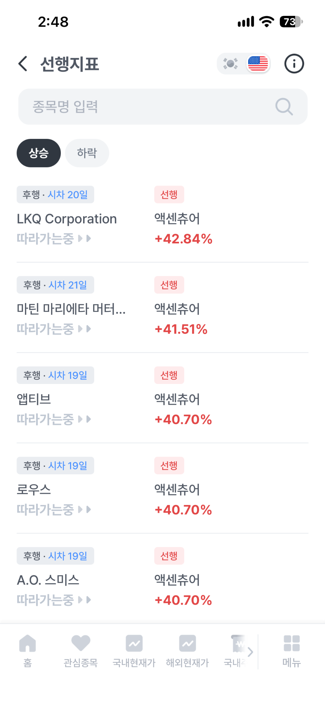
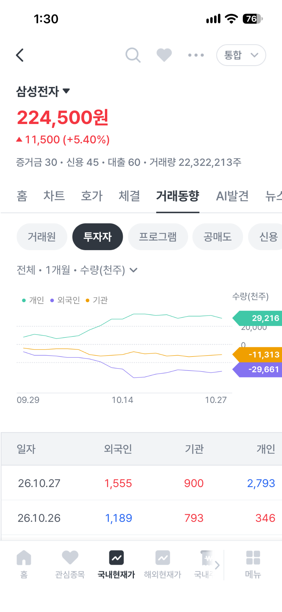

금융앱 내 AI 기능을 아시나요?
전체 응답자 기준 · 서로 다른 문항
AI 기능 인지
95%
AI 기능을 활용함
12%

조수권 이찬종 정다교 여혜인
[00:00–00:15 / 15초] 기획 배경과 사용자 경험(1–8장). 안녕하세요. All in WON입니다. 저희는 지금 보고 있는 투자정보에 맞춰 AI가 질문을 먼저 제안하는 서비스를 준비했습니다. 팀원: 여혜인, 조수권, 정다교, 이찬종. 팀명은 All in WON입니다.전체 응답자 기준 · 서로 다른 문항
AI 기능 인지
95%
AI 기능을 활용함
12%
AI 미이용자 기준
보던 화면에서 바로 시작한다면?
출처: 컨슈머인사이트(2026.10.13), 금융소비자 1,500명 대상
[00:15–01:00 / 45초] 하나의 이중 도넛으로 인지와 행동의 간극을 보여줍니다. 바깥 고리는 AI 기능 인지 95%, 안쪽 고리는 필요할 때 AI부터 찾는 비율 12%입니다. 둘 다 전체 응답자 기준의 서로 다른 문항입니다. 인지자 중 12%라는 조건부 비율이나 실제 전환 퍼널로 설명하지 않습니다. 기획에는 기존 방식 선호 31%, 효용 불확실 19%, 접근·이용 어려움 16%라는 세 이유를 연결했습니다. 전체 응답에서 상위 세 항목이라는 뜻은 아닙니다. 위험 우려 24% 등 다른 응답은 이 화면에서 제외했습니다. 사용자가 익숙한 화면을 유지하고, 자신에게 필요한 질문을 바로 선택할 수 있다면 어떨까요? 다음 장에서 사용 장면을 살펴보겠습니다. 출처: https://www.consumerinsight.co.kr/boardView?id=pr18_list&no=3953 . 전체 1,500명, 비이용 이유 749명·단일응답. 우리투자증권 자체 이용률이 아닌 금융앱 일반 조사입니다.투자 8개월 차 주식 초보
?
먼저 팝업을 닫습니다.


팀 제공 우리투자증권 앱 캡처 5장(2026.10.27)의 순서 재현 / 페르소나: 팀 기획의 가상 사용자
어려운 AI 설명
[01:00–01:40 / 40초] 김서연은 29세, 투자 8개월 차의 가상 사용자입니다. 주가가 왜 움직였는지 궁금하지만 어떤 뉴스와 지표를 봐야 하는지, 무엇부터 질문해야 하는지 막막합니다. 앱 진입 팝업을 닫고 최근 본 종목, 종목 목록, 이벤트 카드를 지나 AI.zip까지 아래로 탐색합니다. AI 설명이 더 어렵게 느껴져, 써도 이해에 도움이 되지 않는다고 느끼는 서연의 말풍선을 보여줍니다. 핵심은 효용 불확실이며 메뉴 탐색의 어려움은 보조 맥락입니다. AI.zip에 도착한 뒤 AI SCAN과 선행지표를 직접 누르거나 더 스크롤하면 사용자가 제공한 두 AI 화면을 차례로 보여줍니다. 첫 번째 질문 말풍선은 계속 선명하게 둡니다. 두 번째 말풍선은 흐리게 시작하고, 선행지표 화면까지 확인하면 선명하게 드러납니다. 시즈널과 선행지표라는 용어가 서연에게는 더 어렵게 느껴지는 장면입니다. 두 화면을 열면 해당 용어를 원본 캡처에서 돋보기로 확대하여, 뒤쪽 관객도 읽을 수 있게 보여줍니다. 검색은 다음 4페이지에서 진행합니다. 페르소나 근거: https://app.notion.com/p/4057178358a98029b341f76f1b88e228모르겠다.
귀찮은데 검색해봐야지.
뉴스도 어려운 말뿐이네…
그래서 왜 떨어진 거지?
검색부터 뉴스 해석까지,
서연이 혼자 해결해야 합니다.

앱에서 느낀 궁금증을
검색어로 다시 옮깁니다.
검색 결과에서도 낯선 용어를 다시 만납니다.
선행 EPS 추정치 하향은 PER 부담으로 이어질 수 있다.
외국인 순매도가 겹치면 단기 변동성이 커질 수 있다.
발표 흐름을 위한 가상 기사
검색해도 남는 어려움
[01:40–02:05 / 25초] 앞 페이지에서 보던 증권 앱을 그대로 이어서 보여줍니다. 휴대폰 아래 홈 버튼을 누르고 네이버를 엽니다. 삼성전자 주가 왜 떨어졌나를 검색한 뒤 첫 뉴스 제목을 누릅니다. 검색은 했지만 EPS, PER, 순매도 같은 용어 때문에 여전히 이해하지 못하는 서연을 말풍선으로 보여줍니다. 검색 결과와 기사는 발표 흐름을 위한 가상 화면입니다. 페르소나 근거: https://app.notion.com/p/4057178358a98029b341f76f1b88e228투자 경험 6년 · 근거를 직접 확인하는 투자자
직접 확인하는 방식이 익숙해서
AI를 먼저 찾지 않습니다.

여러 화면을 오가는 불편ㅎ
[02:05–02:45 / 40초] 이준호는 38세, 투자 경험 6년의 가상 사용자입니다. 수급을 읽을 줄 알고, 거래동향과 뉴스·공시를 직접 확인하는 방식에 익숙합니다. 주식 정보를 이해하지 못해서가 아니라 기존 방식이 편해서 AI를 굳이 눌러보지 않는 사람이 이번 이야기의 준호입니다. 오른쪽 휴대폰은 제공된 거래동향, 뉴스, 공시 캡처로 원래 하던 확인 방식을 재현합니다. 캡처의 가격과 날짜는 촬영 시점의 화면이며 실시간 데이터가 아닙니다. 페르소나 근거: https://app.notion.com/p/4057178358a98029b341f76f1b88e228투자 경험 6년 · 직접 판단하는 방식에 익숙함
주식 정보를 이해하는 준호에게는
기존 방식이 이미 충분합니다.
익숙한 방식에 머무름
[02:45–03:15 / 30초] 준호의 핵심 장벽은 기존 방식 선호입니다. 주식과 수급을 이해하고 직접 뉴스·공시를 확인하는 방식에 익숙해서 굳이 AI를 누르지 않습니다. 이는 통계의 기존 방식 선호 항목을 페르소나에 연결한 기획 가설입니다. 뒤의 수급 화면에서 준호에게 관심이 생기는 질문을 먼저 제안하면, 그 질문을 계기로 AI를 눌러보는 전환을 설계할 수 있습니다. 단순히 화면 이동을 줄이거나 저장을 편하게 하는 이야기가 아닙니다. 페르소나 근거: https://app.notion.com/p/4057178358a98029b341f76f1b88e228기획 인사이트
일상에서 보던 화면에서, 맞춤형 질문으로
AI가 고객께 직접 찾아갑니다.
기획 가설 · 이용성 개선 효과는 사용자 검증 예정.
[02:15–03:00 / 45초] 기존 방식 선호에는 보던 화면을 유지하는 방향, 효용 불확실에는 현재 화면에 맞춘 질문을 제안하는 방향, 접근·이용 어려움에는 버튼 한 번으로 시작하는 방향을 연결했습니다. 그래서 보던 화면에서 맞춤형 질문을 버튼 한 번으로 시작하는 서비스를 기획했습니다. 이는 설문과 가상 페르소나에서 도출한 설계 가설이며 실제 이용성 개선 효과는 사용자 검증으로 확인합니다. 지금부터 구현한 앱에서 이 흐름을 시연하겠습니다.어려운 AI 설명에서, 이해할 수 있는 설명으로
AI가 내 수준대로
질문을 던져줘서
이해가 쉽네
읽던 뉴스와 수급을 한 화면에서 연결
뉴스랑 수급을
외국인 매매 흐름이 시장의 관심을 모으고 있다.
기관 수급과 최근 흐름을 함께 확인할 필요가 있다.
외국인 매매 흐름이 시장의 관심을 모으고 있다.
기관 수급과 최근 흐름을 함께 확인할 필요가 있다.
외국인은 순매수,
기관은 순매도 흐름이에요.
최근 20거래일 · 시연 데이터
뉴스와 수급을 바로 연결
[04:40–06:40 / 120초] 준호가 읽던 뉴스와 외국인 수급을 연결하는 장면입니다. 왼쪽 휴대폰의 뉴스에서 추천 질문을 누르면 오른쪽의 답변이 강조됩니다. 기사와 종목명을 다시 입력하지 않고 현재 뉴스의 맥락을 이어받아 같은 기간의 외국인·기관 수급을 확인합니다. 준호에게 필요한 도움은 기초 용어 설명이 아니라, 직접 찾고 대조하던 정보를 편하게 연결하는 것입니다. 오른쪽 답변의 닫기 또는 읽던 기사 다시 보기를 누른 뒤 질문을 다시 눌러 화면이 이어지는 모습을 보여줄 수 있습니다. 기사와 수급은 동작 설명을 위한 시연 예시입니다. 실제 기사·실시간 데이터·투자 판단의 근거로 소개하지 않습니다. 비교 기준은 두 주체 모두 최근 20거래일이며 시연용 누적 외국인 순매수 4,874억원, 기관 순매도 1,595억원입니다. 그래프는 20개의 거래일을 같은 기준으로 표시합니다. 준호는 기존 방식에 익숙해 AI를 누르지 않다가, 읽던 기사에서 관련 수급을 바로 확인하는 편리함을 경험한다는 기획 가설입니다.지금부터, 서비스를 만나보시죠.
배포된 서비스 바로가기↗ 지금부터, 서비스를 만나보시죠. 아래 배포 링크를 누르면 제공된 배포 서비스 주소를 새 탭에서 엽니다.맥락에 맞는 도움을, AI가 먼저.
AI 질문에서, 우리금융그룹의 다음 서비스로.
준호 · 투자 아이디어
수급 확인에서 ETF 탐색·매수로
서연 · 금융 이해
쉬운 설명에서 IRP 안내·개설로
그룹사 연계 시나리오 · 실제 거래·개설 없음
AI가 궁금증을 풀어주는 데서 그치지 않고, 다음 금융 행동으로 이어지는 확장 시나리오입니다. 준호는 수급 질문에서 우리자산운용 ETF 탐색과 매수로, 서연은 IRP 이해에서 우리은행의 계좌 안내와 개설 절차로 연결됩니다. 그룹사 연계는 시연 예시입니다.수급 질문에서 시작합니다.
방향키로 실제 앱 화면과 옆의 한 줄 설명을 함께 진행합니다. 실제 금융거래는 실행되지 않는 그룹사 연계 시나리오입니다.기사 속 IRP가 궁금합니다.
방향키로 실제 앱 화면과 옆의 한 줄 설명을 함께 진행합니다. 실제 금융거래는 실행되지 않는 그룹사 연계 시나리오입니다.